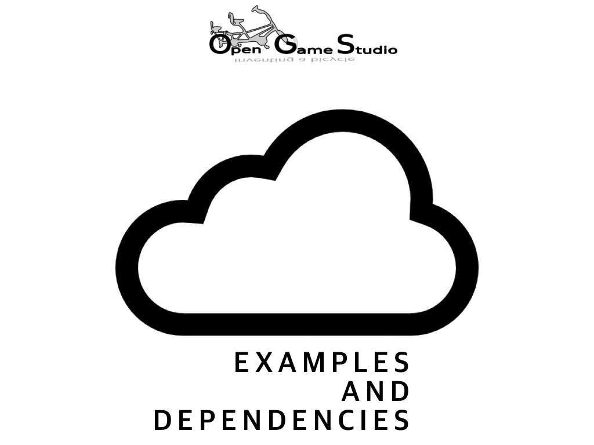
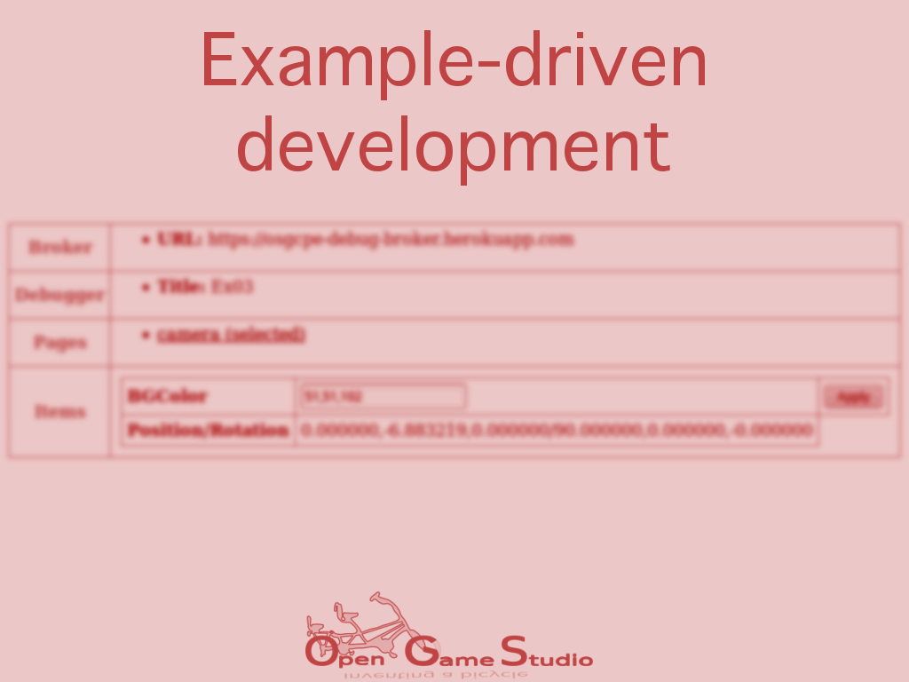

Новости
На пути к долговечным приложениям
2019-08-05 00:00

В этой статье мы расскажем о нашем первом долговечном приложении для настольных ПК - генераторе статических сайтов ПСКОВ.
Долговечность
Под долговечным приложением мы понимаем такое приложение, которое работает без единого изменения на операционных системах, выпущенных в период 2010-2030 годов. Иными словами, долговечное приложение обладает 10-летней обратной совместимостью и 10-летней прочностью. Впрочем, ПСКОВ работает даже на Windows 2000, так что у него 19-летняя обратная совместимость.. . .
Защита доступности
2019-04-16 00:00

В этой статье мы расскажем о начале усилий по защите себя от решений третьих сторон.
С первого дня существования проекта Opensource Game Studio мы используем решения третьих сторон для достижения своей цели по созданию лучших средств разработки игр. Мы использовали форумы, системы отслеживания задач, списки рассылок, социальные сети, системы контроля версий кода, хостинги, компиляторы, библиотеки и т.д.. Каждое решение третьих сторон имеет свой жизненный цикл.. . .
Обучение детей программированию
2019-02-04 00:00

В этой статье Михаил делится своим опытом обучения детей программированию.
Он расскажет о следующем:
- организация процесса обучения
- программа обучения
- игра на память
- инструмент программирования
- уроки
- результаты и планы
Организация процесса обучения
Обучение проходит в рамках социальной ответственности бизнеса: компания предоставляет помещение с оборудованием, а также объединяет сотрудников, желающих попробовать себя в роли преподавателей, с сотрудниками, желающими обучить своих детей. Всё это исключительно на добровольной основе.. . .
Год переосмысления
2019-01-01 0:01

Этот год во-многом стал для нас годом переосмысления и определенности. Как некоторые из вас помнят, мы начинали этот проект, для создания среды для разработки игр. В течение многих лет идея развивалась от одной формы к другой, иногда изменения были значительными, в других случаях мы отбрасывали весь код и начинали заново.
В результате всех этих изменений мы подошли к концу 2018 года без готового инструмента, но с четким пониманием того, что за инструмент мы создаем.. . .
Идеальные игры и средства для их разработки
2018-11-19 00:00

В этой статье мы обсудим, как выглядят идеальные видеоигра и инструмент для разработки видеоигр, по нашему мнению.
Вопросы
Как вы знаете, целями Opensource Game Studio являются:
- создание бесплатных инструментов для разработки видеоигр
- создание видеоигр с помощью этих инструментов
- создание самоучителей по разработке видеоигр
В этот раз мы решили задать себе пару простых вопросов:
- Какова идеальная видеоигра?
- Каков идеальный инструмент для разработки видеоигр?. . .
OGS Mahjong 2: Demo 2
2018-10-02 00:00

Мы рады сообщить о выпуске второй демонстрации OGS Mahjong 2. Её целью были улучшение техники разработки и создание надёжной основы кроссплатформенной разработки.
Выпуск
Запустите последний выпуск OGS Mahjong 2 в вашем браузере: http://ogstudio.github.io/ogs-mahjong
Рекомендуем запускать игру с параметром seed следующим образом: http://ogstudio.github.io/ogs-mahjong?seed=0. . .
Примеры и зависимости
2018-08-21 00:00

Эта статья описывает два новых кросс-платформенных примера OpenSceneGraph и изменение в работе с зависимостями.
Примеры клиента HTTP и выбора узла сцены
После окончания работы над примером удалённой отладки и сообщения об этом мы с удивлением обнаружили, что безопасное соединение HTTPS между отлаживаемым приложением и брокером отладки работало лишь в веб-версии примера. Десктопная и мобильная версии работали лишь с помощью обычного соединения HTTP.. . .
Разработка через создание примеров
2018-06-27 00:00

Эта статья описывает то, как создание третьего кросс-платформенного примера OpenSceneGraph привело нас к разработке через создание примеров.
ИЗМЕНЕНИЯ ОТ 2018-08: третий пример был переименован в четвёртый в связи с причинами, изложенными в следующей статье.
Третий кросс-платформенный пример OpenSceneGraph
Третий кросс-платформенный пример OpenSceneGraph содержит реализацию удалённой отладки, работающей на всех поддерживаемых платформах. Этот пример относится не столько к OpenSceneGraph, сколько к поддержке различных платформ.. . .
Кросс-платформенные примеры OpenSceneGraph
2018-04-20 00:00

Эта статья резюмирует создание первых двух кросс-платформенных примеров OpenSceneGraph.
К тому времени, как мы выпустили первую техническую демонстрацию OGS Mahjong 2, нас уже дожидался запрос на описание работы с изображениями в OpenSceneGraph на Android. Сначала мы рассматривали возможность создания нового самоучителя для кросс-платформенного руководства OpenSceneGraph, но позже мы оценили необходимые трудозатраты и посчитали их излишними для освещения такой небольшой темы (по сравнению с тем, что умеет средняя игра) как загрузка изображений. Мы решили продолжить делиться нашими знаниями в виде конкретных примеров. Так на свет появились кросс-платформенные примеры OpenSceneGraph.. . .
Страница 4 из 9